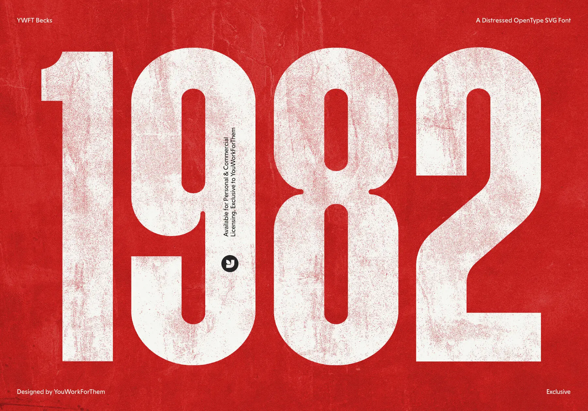

The original lets the year nearly fill the sheet; paper wear and ink wear remain visible as separate print layers.
A full-bleed red-paper date poster with worn, oversized cream numerals.

The original lets the year nearly fill the sheet; paper wear and ink wear remain visible as separate print layers.